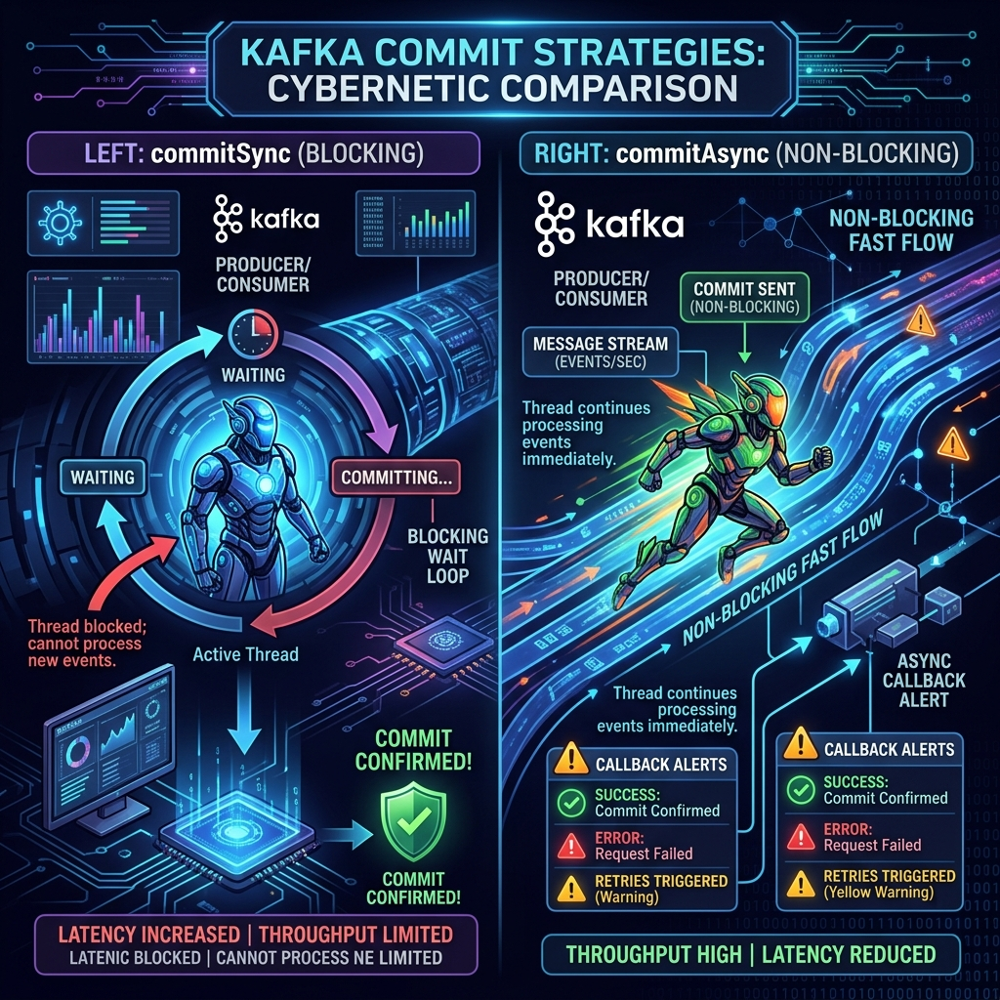

If you disable auto-commits in Apache Kafka for data reliability, your consumer application must commit offsets manually. Kafka provides two primary methods for this: commitSync() and commitAsync().
Choosing between them is a classic performance tuning problem. Do you prioritize maximum throughput (async) or guaranteed delivery confirmations (sync)? Let's analyze the differences, code layouts, and best practices.

Imagine telling your boss you finished reviewing a project:
- commitSync() is like calling them: You dial their number, wait for them to answer, and discuss the confirmation. Your entire day stops while waiting on the line. If the line drops, you redial immediately until they confirm.
- commitAsync() is like sending a quick text message: You type "Done," press send, and instantly return to reviewing the next document. You don't wait for a reply. If they have issues, they will text you back later (callback listener), but you keep working in the meantime.
Detailed Comparison
| Metric | commitSync() | commitAsync() |
|---|---|---|
| Thread Behavior | Blocks the thread until the broker responds. | Non-blocking; fires request and returns. |
| Throughput | Lower (waiting adds network latency). | Higher (no waiting pauses). |
| Retries | Retries automatically on retriable errors. | Does not retry (to prevent overwriting newer commits). |
| Error Handling | Throws exception synchronously on failure. | Requires a custom OffsetCommitCallback interface. |
The Combined Best Practice Pattern
To maximize speed during normal operations but guarantee final commits during system shutdowns, combine both methods. Use `commitAsync()` inside your fast poll loops, but run a blocking `commitSync()` inside your final close/cleanup blocks:
try {
while (running) {
ConsumerRecords records = consumer.poll(Duration.ofMillis(100));
for (ConsumerRecord record : records) {
process(record);
}
// Commit asynchronously inside the loop for speed
consumer.commitAsync((offsets, exception) -> {
if (exception != null) {
log.error("Commit failed for offsets {}", offsets, exception);
}
});
}
} catch (Exception e) {
log.error("Processing error", e);
} finally {
try {
// Guarantee the final processed offset is committed on shutdown
consumer.commitSync();
} finally {
consumer.close();
}
} Conclusion
Never rely solely on commitSync() if you require high-speed consumption pipelines. By running asynchronous commits in your main loop and backing them up with a synchronous commit on shutdown, you get the best of both worlds: high performance and data safety.